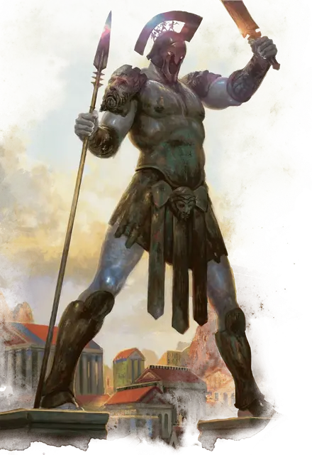

Колосс Акросский
Colossus of Akros
Громадный Конструкт, без мировоззрения, именной НИП

Класс Доспеха 21 (природный доспех)
Хиты 350 (20к20 + 140)
Скорость 60 футов
| мод | спас | ||
|---|---|---|---|
| СИЛ | 28 | +9 | +16 |
| ЛОВ | 10 | +0 | +0 |
| ТЕЛ | 25 | +7 | +14 |
| мод | спас | ||
|---|---|---|---|
| ИНТ | 3 | −4 | −4 |
| МДР | 11 | +0 | +0 |
| ХАР | 1 | −5 | −5 |
Навыки Атлетика +16, Восприятие +7
Иммунитет к урону огонь, психическая энергия, яд; дробящий, колющий, рубящий от немагических атак
Иммунитет к состояниям бессознательность, испуг, истощение, окаменение, отравление, очарование, ошеломление, паралич
Чувства тёмное зрение 120 футов, пассивное Восприятие 17
Языки Понимает Общий и Небесный, но не говорит
Опасность 23 (50000 опыта)
Бонус мастерства +7
Особенности
Разрушительное падение. Когда хиты колосса опускаются до 0, он разрушается и распадется. Любое существо на земле в пределах 30 футов от разрушающейся статуи должно совершить спасбросок Ловкости Сл 22, получая 22 (4к10) дробящего урона и 22 (4к10) урона огнём при провале или половину этого урона при успехе.
Поглощение огня. Каждый раз, когда колосс должен получить урон огнём, он не получает урон, и вместо этого восстанавливает количество хитов, равное причиняемому урону огнём.
Неизменяемая форма. Колосс обладает невосприимчивостью ко всем заклинаниям и эффектам, изменяющим его форму.
Магическое оружие. Атаки оружием колосса являются магическими.
Осадный монстр. Колосс наносит двойной урон объектам и сооружениям.
Действия
Мультиатака. Колосс Акросский совершает две рукопашные атаки.
Копьё. . Рукопашная или дальнобойная атака оружием: +16 к попаданию, досягаемость 15 футов или дистанция 200/600 футов, одна цель. Попадание: 23 (4к6 + 9) колющего урона или 27 (4к8 + 9) колющего урона, если используется двумя руками для рукопашной атаки. Если колосс совершает дальнобойную атаку этим копьём, то копьё волшебным образом возвращается в его руку после атаки.
Меч. Рукопашная атака оружием: +16 к попаданию, досягаемость 15 футов, одна цель. Попадание: 36 (6к8 + 9) рубящего урона.
Пламя Акроса (Перезарядка 6). Магическое пламя извергается из колосса в сторону трех существ, которых колосс может видеть в пределах 90 футов. Каждая цель должна совершить спасбросок Ловкости Сл 24, получая 36 (8к8) урона огнём при провале или половину этого урона при успехе. При провале цель также волшебным образом загорается на 1 минуту. В конце каждого своего следующего хода горящая цель повторяет спасбросок. При провале получая 18 (4к8) урона огнём, а при успехе оканчивая на себе эффект.
Описание
Огромный голем из бронзы и железа возвышается над путём, ведущим к полису Акрос. Хотя его редко призывают защищать полис, одного вида его величественной формы достаточно, чтобы успокоить умы населения. В поистине отчаянные времена жрецы Пирфора творят свою магию, чтобы воззвать колосса к жизни, после чего земля сотрясается, когда он спускается со своих двух постаментов, чтобы предстать перед угрозой.